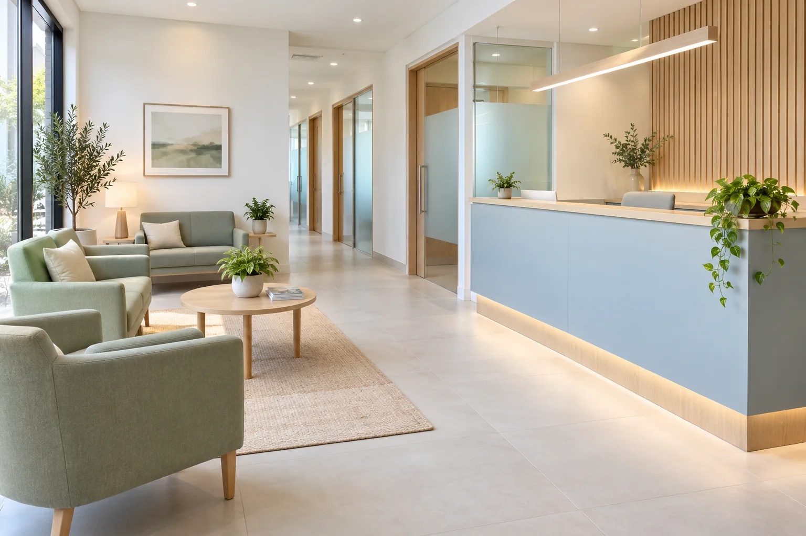

Clínica médica
Uma conversa inicial sobre saúde, rotina e acompanhamento.
Conhecer atendimentoCuidado que começa na escuta
Diferentes especialidades. Uma forma próxima e clara de cuidar de você.
Clínica fictícia · Agendamento demonstrativo
Escolha o atendimento e o período para experimentar o agendamento.
Especialidades
Áreas de atendimento reunidas em uma apresentação simples, com espaço para conhecer cada proposta.
Uma conversa inicial sobre saúde, rotina e acompanhamento.
Conhecer atendimentoUm espaço de escuta para famílias e para o cuidado na infância.
Conhecer atendimentoAtendimento ilustrativo voltado às informações sobre cuidado com a pele.
Conhecer atendimentoDiálogo sobre alimentação, contexto e organização da rotina.
Conhecer atendimentoApresentação de um espaço reservado para escuta e acompanhamento.
Conhecer atendimentoAvaliação e acompanhamento apresentados com atenção ao movimento.
Conhecer atendimento6 atendimentos demonstrativos · Todas

A clínica
Um espaço claro, organizado e acolhedor, pensado para conversar sobre a sua rotina e o seu cuidado.
Tempo para apresentar dúvidas e entender cada etapa.
Especialidades organizadas para facilitar a escolha.
Uma experiência próxima desde a primeira conversa.
Equipe ilustrativa
Conheça os personagens que representam as áreas de cuidado neste modelo.
Atendimento clínico · perfil fictício
Nutrição · perfil fictício
Psicologia · perfil fictício
Fisioterapia · perfil fictício
Convênios demonstrativos
Os nomes abaixo são ilustrativos. A cobertura será definida com a clínica na versão real.
Informações para você
A proposta começa com escuta e avaliação individual. Neste modelo, os botões mostram apenas uma simulação de agendamento.
Você pode conhecer as áreas de cuidado e conversar sobre o atendimento mais adequado. Na versão demonstrativa, nenhuma consulta é marcada.
Esta marca é fictícia. O endereço aparece como “a definir” para ser personalizado com as informações do cliente.
Não. Marca, profissionais, serviços, horários e imagens são ilustrativos. Esta é uma demonstração de site criada pela TS Digital.
Conte com uma conversa
Clínica demonstrativa. Nenhum atendimento real é prestado aqui.
Clínica demonstrativa. Endereço a definir.